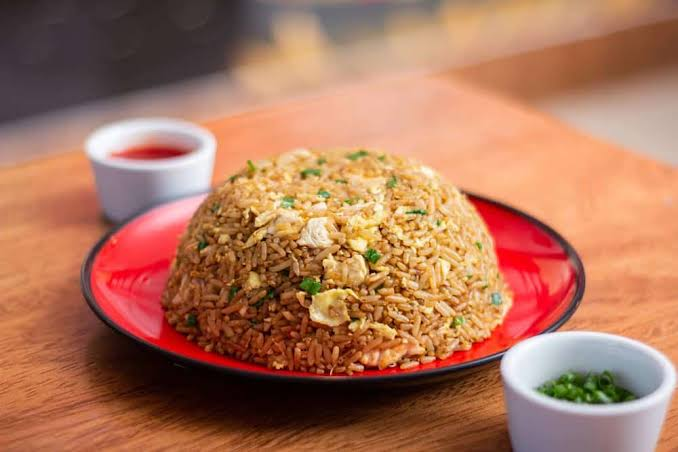

Receta Arroz Chaufa
Home

Descripcion
La receta de arroz chaufa peruano es nuestra versión del arroz frito chino. Nace por los inmigrantes chinos que llegan a Perú entre los siglos XIX y XX. Desde entonces ambas culturas se unen para crear una comida fusión deliciosa a la que llamamos «chifa». Con el tiempo, este plato se ha vuelvo un clásico de la cocina peruana. Otro plato muy conocido de la gastronomía peruana que nace de esta unión de culturas es el lomo saltado. El arroz chaufa de pollo se come muchísimo en las casas peruanas en el día a día y se le suele agregar también hot dogs picados junto con el pollo. Usualmente este plato se hace para usar sobras de arroz del día anterior, y de hecho funciona mejor de esa manera.
Ingredientes
- 2 tazas de arroz cocido (preferiblemente del día anterior)
- 250 g de pollo en cubos
- 2 huevos
- 1 cucharadita de kion rallado
- 2 cucharadas de sillao (salsa de soya)
- 1 cucharadita de aceite de ajonjolí
- 1/2 cucharadita de azúcar
- 1/2 cucharadita de sal
- 1/4 de taza de cebolla china picada (parte verde y blanca)
- 1 cucharada de salsa de ostión (opcional)
- Salchicha china en rodajas (opcional)
Pasos
- En un wok o sartén grande, calienta una cucharada de aceite vegetal a fuego alto. Agrega el
pollo en cubos y saltéalo hasta que esté dorado. Añade una cucharada de sillao y mezcla
bien. Retira el pollo y resérvalo.
- En la misma sartén, agrega unas gotas de aceite y vierte los huevos batidos con una pizca
de sal. Revuelve rápidamente para formar un huevo revuelto suelto. Retíralo y resérvalo.
- Añade el resto del aceite y saltea el kion rallado por unos segundos hasta que libere su
aroma. Agrega el arroz cocido y remueve constantemente para que se integre con el kion.
- Regresa el pollo y el huevo revuelto a la sartén. Añade la salchicha china en rodajas (si
usas), el sillao restante, la salsa de ostión (opcional), el azúcar, la sal y la pimienta. Mezcla
bien y cocina por unos minutos más.
- Añade el aceite de ajonjolí y la cebolla china picada. Remueve bien y cocina por un minuto
adicional. Sirve caliente acompañado de wantán frito o salsa de tamarindo si lo deseas.